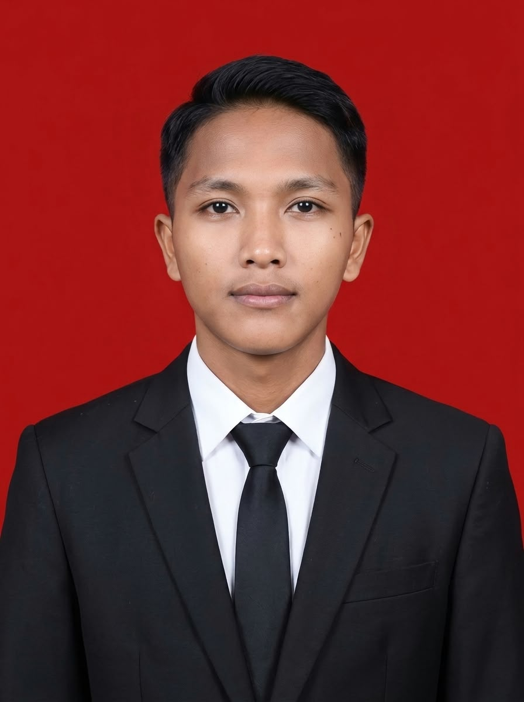

Universitas Bani Saleh
D3 Teknik Komputer
2024 - Sekarang
Semester 5
IPK: 3.68/4.00

Karawang, Indonesia | 081939913396 | arizzalbachrie15@gmail.com
Mahasiswa semester 5 Program Studi D3 Teknik Komputer Universitas Bani Saleh yang memiliki minat pada bidang IT, pemrograman, data analyst, dan database MySQL. Memiliki kemampuan dasar dalam penggunaan Microsoft Office, pemrograman, serta pengoperasian software dan hardware komputer. Aktif dalam organisasi sebagai Sekretaris HIMATEKOM dan Divisi Event UBS FC. Memiliki semangat belajar tinggi dan siap mengembangkan kemampuan di bidang teknologi informasi.
Saya memiliki minat pada bidang IT, pemrograman, data analyst, dan database MySQL. Memiliki kemampuan dasar dalam penggunaan Microsoft Office, pemrograman, serta pengoperasian software dan hardware komputer.
D3 Teknik Komputer
2024 - Sekarang
Semester 5
IPK: 3.68/4.00
Universitas Bani Saleh - Bekasi
2025 - Sekarang
Universitas Bani Saleh - Bekasi
2025 - Sekarang
Project Akademik
Pengembangan website menggunakan HTML dan CSS sebagai bagian dari pembelajaran Teknik Komputer.
Technologies: HTML5, CSS3
Location: Karawang, Indonesia
Phone: 081939913396
Email: arizzalbachrie15@gmail.com